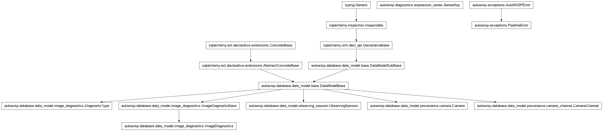

autowisp.browser_interface.diagnostics.series_table module
Class Inheritance Diagram

What the table above a diagnostics plot offers, and what it binds.
The half of the plot page that knows what a row means: which series can
be drawn at all, which channel each column of a row may be bound to, how
many images a binding would draw, and what a row is called while the user
chooses. It never evaluates an expression and never draws anything –
image_diagnostics_views does both – which is not merely a tidy
division. There is a row per observing session and image type, so
evaluating one to fill the table would be work proportional to the whole
image collection; every question asked here is answered by a SQL
aggregate instead.
- autowisp.browser_interface.diagnostics.series_table.build_group_rows(quantile_name, slot_needs, session_channels, db_session)[source]
Return one row per (session, image type) the axes can be drawn for.
A group is offered where every slot has at least one channel to choose from; the choosing then happens in the table, and nothing arrives bound. Pre-binding instead would mean enumerating a cartesian product of the channels across the axes’ parameters.
The exception is a camera defining a single channel – a monochrome one, zero not being a working configuration – where there is nothing to choose. Demanding a click with one possible outcome before anything can be drawn is ceremony, so those rows arrive bound and counted.
- Parameters:
quantile_name (str) – Which
pixel_q*these rows stand for, when an axis was selected as thepixel_quantilesfamily and the table expanded it into one group of rows per recorded member.Noneotherwise – including for an expression naming concrete quantiles, such aspixel_q99[0] / pixel_q50[0], which is an ordinary quantity reading two diagnostics and expands into nothing.slot_needs (list) – What each slot reads, in column order.
session_channels (dict) – What
get_session_channels()returned.db_session – An active SQLAlchemy database session.
- Returns:
Series entries, as
make_series()builds them.- Return type:
- autowisp.browser_interface.diagnostics.series_table.count_bound_images(slot_needs, channels, db_session)[source]
Count the images one binding draws on, for every group at once.
The exact question, where
get_slot_options()answers the looser one that fills the dropdowns: an image counts when its rows cover every (diagnostic, channel) pair between them, which is what a quantity comparing channels needs and what reading each channel on its own cannot say.Every group is counted in one aggregate rather than one per row, since a binding is usually shared – by every row of a monochrome project at render, and by nothing much afterwards, when one row is rebound at a time.
- autowisp.browser_interface.diagnostics.series_table.get_available_diagnostics(recorded, expressions)[source]
Return every quantity an axis may be set to.
One flat list rather than diagnostics and expressions kept apart: an axis reads a name, and a recorded diagnostic is simply an expression of itself as far as anything downstream is concerned. Sharing one name space is what lets the selectors, the URL and the series table treat all of them alike, and it is why an expression may not take a diagnostic’s name.
- Parameters:
recorded (list) – What
get_recorded_diagnostics()found.expressions (dict) – The library,
{name: expression}.
- Returns:
jd, then every recorded diagnostic – with theindividual quantiles standing down in favour of the family name that expands to one series per member – then the expressions this project has the data to draw.
- Return type:
- autowisp.browser_interface.diagnostics.series_table.get_available_expressions(expressions, recorded)[source]
Return the expressions this project has the data to draw.
Availability, not validity. Every stored expression is valid in every project – the vocabulary is the same everywhere, see
autowisp.diagnostics.diagnostic_types– so filtering bycheck_expression()would filter nothing and offer all of them everywhere. What decides whether one is offered here is whether the diagnostics it reaches, transitively, have actually been recorded.- Parameters:
expressions (dict) – The library,
{name: expression}.recorded (list) – What
get_recorded_diagnostics()found. The raw names, since an expression may reference a concretepixel_q*rather than the family.
- Returns:
- The names whose every diagnostic is recorded here,
alphabetically.
- Return type:
- autowisp.browser_interface.diagnostics.series_table.get_available_series(x_diagnostic, y_diagnostic, expressions, db_session)[source]
Return the (session, image type, channel) series plottable for an axis pair.
The count is the number of images recording every diagnostic both axes need – for an expression, every diagnostic it reaches transitively. It is an upper bound on the number of drawn points, since arithmetic can still yield NaN, so the column is labelled for the inputs rather than for the points. Nothing is evaluated to produce it: the count is a question about rows, and stays a SQL aggregate.
- Parameters:
x_diagnostic (str) – Quantity on the X axis.
y_diagnostic (str) – Quantity on the Y axis.
expressions (dict) – The library,
{name: expression}, passed in rather than fetched so that nothing below the view has to know it came from the browser-interface database.db_session – An active SQLAlchemy database session.
- Returns:
diagnostics_fieldsanddiagnostics_list, in theformat
diagnostics_app.htmlexpects.
- Return type:
- Raises:
PipelineError – If an axis names nothing that resolves.
- autowisp.browser_interface.diagnostics.series_table.get_axes_slot_needs(x_diagnostic, y_diagnostic, expressions, quantile_name)[source]
Return what each channel column of the table reads, in column order.
The x quantity’s slots followed by the y quantity’s, concatenated rather than merged: an expression’s numbers are formal parameters, so the two axes’ slots are unrelated even when written alike.
- Parameters:
- Returns:
One
frozensetof diagnostic names per column.- Return type:
- autowisp.browser_interface.diagnostics.series_table.get_axis_slots(quantity, expressions)[source]
Return the diagnostics read in each channel one axis binds.
An axis binds one channel per parameter of the quantity it draws, and two axes never share one: their numbers are formal parameters, so the first slot of the x quantity and the first of the y quantity are unrelated, and tying them together would silently couple the axes.
- Parameters:
- Returns:
- One
(parameter, needed)pair per channel to bind, in column order: the slot number the definition writes, which names the column, and the diagnostics read in it. The parameter is
Nonefor a diagnostic, which has no numbering of its own. Empty for an axis over the time alone, which binds nothing.
- One
- Return type:
- autowisp.browser_interface.diagnostics.series_table.get_binding_response(post_data, *, x_diagnostic, y_diagnostic, expressions, db_session)[source]
Return what a row that has just been fully bound earns.
Merged into the figure’s JSON response, so that choosing the last of a row’s channels costs one round trip rather than two. Nothing here re-renders the table: the client updates one cell and appends at most one row, which is what lets every other row keep its node, and with it what was typed into it and its place under whatever sort is in force.
- Parameters:
post_data (dict) – The whole POST, holding every row’s state and
bind, the id of the row whose channels were completed.x_diagnostic (str) – Quantity on the X axis.
y_diagnostic (str) – Quantity on the Y axis.
expressions (dict) – The library,
{name: expression}.db_session – An active SQLAlchemy database session.
- Returns:
bindechoed back with the row’scountand thedefaults that follow from its channels, plus
spare_rowwhere a further binding is still to be built. Empty when nothing was bound, which is every other redraw.
- Return type:
- autowisp.browser_interface.diagnostics.series_table.get_quantile_names(db_session)[source]
Return the
pixel_q*diagnostic names in use, quantile order.
- autowisp.browser_interface.diagnostics.series_table.get_recorded_diagnostics(db_session)[source]
Return the
DiagnosticTypenames anything has recorded in this project.A per-type
EXISTSprobe rather than aGROUP BYover the whole ofimage_diagnostics: the question is only which names are in use, and the grouped form has to walk every row to answer it.The names come back raw, individual
pixel_q*entries included – beforeget_available_diagnostics()collapses them into the family name. That is what an expression has to be judged against, since one may reference a concrete quantile.- Parameters:
db_session – An active SQLAlchemy database session.
- Returns:
The names in use, in
DiagnosticTypeorder.- Return type:
- autowisp.browser_interface.diagnostics.series_table.get_series_key(series)[source]
Return what one posted row draws: its group, and what it binds.
Half of this comes from the row id and half from the client, and the split is not an inconsistency. Session, type and quantile are not editable in the table, so taking them from the id keeps one source of truth for them; the channels are edited there, and reading them from anywhere but the dropdown the user just changed would be reading a stale value.
- autowisp.browser_interface.diagnostics.series_table.get_session_channels(db_session)[source]
Return the channels each observing session’s camera defines.
Not the channels it has recorded: a Bayer camera part way through processing has one channel with data and three still to come, and treating that one as the only possibility would be wrong by tomorrow. What the camera defines does not move.
- Parameters:
db_session – An active SQLAlchemy database session.
- Returns:
{session_id: [channel name, ...]}, in name order.A session whose camera is not described is simply absent.
- Return type:
- autowisp.browser_interface.diagnostics.series_table.get_slot_headings(axis, axis_name, slots)[source]
Return the column heading for each channel one axis binds.
Named for the axis as well as the quantity because the two axes may name one quantity – comparing a diagnostic between channels is exactly that – and two columns headed alike would say nothing. Where an axis binds several channels the heading is the reference as the definition writes it, so a column can be matched to the text it fills in.
- Parameters:
axis (str) – Which axis these columns belong to.
axis_name (str) – The quantity as the selector names it, which for the quantile family is the family rather than a member: the table has one header for all of them.
slots (list) – What
get_axis_slots()returned for the axis.
- Returns:
One heading per channel to bind.
- Return type:
- autowisp.browser_interface.diagnostics.series_table.get_slot_options(slot_needs, db_session)[source]
Return what each slot of the table may be bound to, and the labels.
One aggregate per distinct set of diagnostics among the slots – usually one for the whole table, since the commonest axis pairs read the same diagnostics in every slot. Nothing is evaluated: which channels a slot may offer is a question about rows.
- Parameters:
slot_needs (list) – What each slot reads, from
get_axis_slots()for each axis in turn.db_session – An active SQLAlchemy database session.
- Returns:
- dict: One entry per distinct set of needs, holding
{(session_id, image_type): {channel: count}}.
dict:
{session_id: label}, the same whatever is read.- Return type:
- autowisp.browser_interface.diagnostics.series_table.make_row_id(session_id, image_type, quantile_name, ordinal)[source]
Return the id of one row of the series table.
A row outlives the channels bound in it – binding one is an edit made in the row – so its id names the group it belongs to and its place among the rows of that group, and says nothing about channels. That is what lets the four element ids derived from it (
plot-color:,marker-button:,scale:,label:) and the key the client posts it under stay put while the user chooses.- Parameters:
- Returns:
- The opaque id, which has to survive a round trip through
the client unchanged.
- Return type:
- Raises:
ValueError – If a part contains the separator, which would make the id ambiguous. Worth failing on rather than trusting, since the alternative is a plot that silently draws the wrong rows.
- autowisp.browser_interface.diagnostics.series_table.make_series(row_id, session_label, series_key, slots, count)[source]
Build the entry describing one row of the series table.
- Parameters:
row_id (str) – What
make_row_id()returned for this row.session_label (str) – The label of the observing session.
series_key (SeriesKey) – What the row draws once bound. Its
channelsare empty for a row still to be bound.slots (list) – One entry per channel the axes bind, as
get_slot_options()describes them.count (int) – The number of images contributing, or
Nonewhere nothing is bound yet and there is nothing to count.
- Returns:
- A series entry with the keys expected by
diagnostics/_series_row.htmlandplot_image_diagnostic_series().
- Return type:
- autowisp.browser_interface.diagnostics.series_table.plan_spare_row(row_id, slot_needs, options, labels, datasets)[source]
Return the entry for a fresh unbound row, or
Nonefor no spare.Completing a row’s channels summons one below it, so that a second binding of the same series can be built and drawn on the same figure. Two cases earn none: a spare is already waiting – this row is not the last of its group, so it was rebound rather than newly bound – and a group whose every possible binding is already present, where a further row could only repeat one.
Kept apart from rendering it so that the decision can be tested without Django, which is where every other rule in this module is checked.
- Parameters:
row_id (str) – The row that was just bound. What it binds does not matter here – a spare binds nothing – so only its group and its ordinal are read from it.
slot_needs (list) – What each channel column reads.
options (dict) – What
get_slot_options()returned.labels (dict) – The session labels from the same call.
datasets (dict) – Every row of the table as the client posted it.
- Returns:
A series entry, as
make_series()builds it.- Return type:
dict or None
- autowisp.browser_interface.diagnostics.series_table.resolve_quantity(quantity_name, quantile_name)[source]
Map an axis name onto the concrete quantity for one series.
pixel_quantilesnames a family rather than a quantity: each series picks onepixel_q*member of it, recorded in the series id. Resolving that here, once, is what lets everything downstream handle a single concrete name – leavingjdas the only quantity that still needs a branch anywhere, because it alone comes from the image table rather than fromimage_diagnostics.
- autowisp.browser_interface.diagnostics.series_table.row_id_separator = '|'
Separates the fields of a row id. Not the underscore an earlier encoding used:
pixel_q*names contain those, so unpacking had to guess which underscores separated fields. Neither a session id, an image type nor a diagnostic name can contain this one.
- autowisp.browser_interface.diagnostics.series_table.row_ordinal(row_id)[source]
Return which of its group’s rows this is, counting from zero.
- autowisp.browser_interface.diagnostics.series_table.split_row_id(row_id)[source]
Return
(session_id, image_type, quantile_name)from a row id.The group a row belongs to, which is what almost everything wants: the ordinal only tells sibling rows apart, and is read separately by the one caller that needs it.